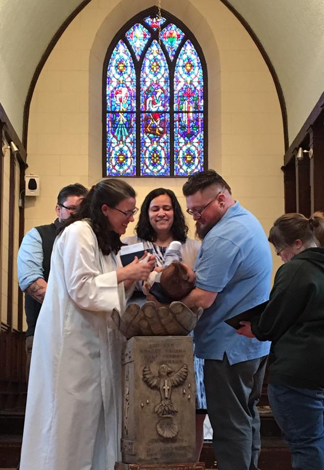

In February of 2014 a group of people, many of whom were affiliated with ECC, began worshipping together in an Episcopal Church that had been closed for several years (formerly Calvary Church). Our desire was to create an informal worship experience with contemporary music that was family friendly - similar to worship at camp. Our services are held in the evening, generally with a pot luck dinner to follow. Beloved is now considered a chapel of the Episcopal Conference Center, as we hold many of our worship services at ECC over the course of the year, and we are largely supported by the camp ministry
We are still a new congregation, and we have anywhere from 15 to 50 people worship with us on any given week. Our building and our worship is a work in progress – just like we are – and we strive to be comfortable with our imperfections.
Why Beloved?
The following paragraph’s were written by our priest about why we chose to name ourselves the Church of the Beloved:“Back when I started praying and dreaming about this church, I started thinking of names. I reflected on my ministry thus far, and specifically on my ministry at the camp. And I asked myself – based on that experience – what I feel like the one thing is that people really need to know when it comes to God. And the answer that came was “I want them to know they are God’s beloved.”
There’s another reason to be named Church of the Beloved. In Matthew’s third chapter John the Baptist baptizes Jesus in the Jordan River. When the baptism takes place a dove (the Spirit) comes down from heaven and a voice says “This is my Son, my Beloved, and with him I am well pleased.” I have always loved this passage because of the beauty of baptism (being welcomed into Christian community), because the Holy Spirit is so clearly present, and because God speaks so beautifully about being pleased with his beloved Son. I want to follow that beloved Son, and I want to believe – always – that I am also God’s beloved child.“
Our Priest

Meaghan Kelly Brower
The Reverend Meaghan Kelly Brower serves as the full time director of the Episcopal Conference Center (ECC), the summer camp and retreat center for the Diocese of RI. As a camper and counselor there in the 90s, Meaghan felt her first call to ordained ministry.
After her graduation from Virginia Seminary in 2007, Meaghan lived in North Carolina with her husband Jonathan, serving as the Associate Rector of Emmanuel Church in Southern Pines. After four years there she came home to RI to take the position at ECC. She and Jonathan now have three children together.
After spending over a year filling in at other parishes, Meaghan felt compelled to start a new church that was a little different from all of the great options that currently exist in RI - mainly a church that worshipped in the evening and used primarily contemporary music. Because Meaghan has other responsibilities, she approaches this church as a true community effort.
Perhaps because of all of her time at summer camp Meaghan feels very strongly about Christian community being joyful. She strives to create an environment in worship that is warm, open, honest, intimate, and full of laughter.